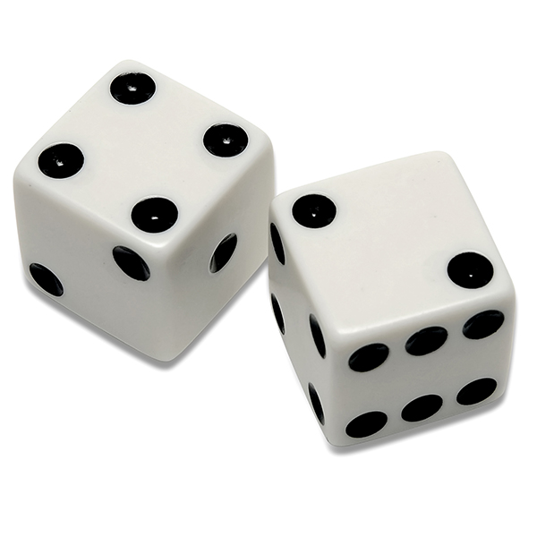

Here is my technical portfolio! You can find all sorts of things that I worked on.
I thouroughly enjoyed making every single one of them.
Each project taught me something different.
Feel free to check them out!
.............................................................................................
<

Here is a project I worked on in CSCE 121. Here I...
-Constructed a program that used a content-aware algorithm to resize PPM format pictures.
-Used C++-specific concepts to display resized images without distortions and keep details.
<
This pet project of mine is a gambling game.
-Created a gambling-style game that allowed users to place and stack bets until a faulty dice roll.
-Used Python to create a user-modifiable experience where users can change the game's rules.
-Collaborated alongside a group and maximized efficiency in case testing.
<
This is another one of my CSCE 121 projects...
-Created an arcade-style dungeon crawling game with multiple levels with varying difficulty.
-Featured “monsters” that chased the player to add difficulty to the game.
-Employed usage of two-dimensional dynamic arrays to create a playable map environment.